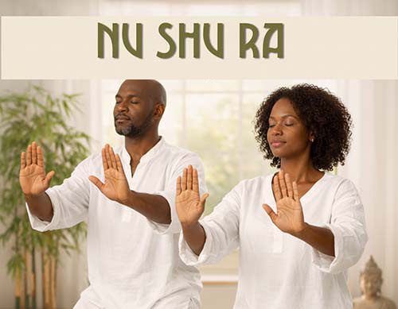

Class Name
Saturday Nu Shu Ra class — 12:00 noon
Location
Kilburn Library
Specify specific date upon checkout

Flowing water never stagnates.
Embodied Spiritual Technology
Nu Shu Ra is a slow, dynamic and meditative movement practice that unites breath, flowing motion, and inner awareness to strengthen the body, calm the mind, and restore energetic balance.
Slow, continuous movement joined with deep breathing to cultivate mind / body / spirit harmony
Saturday Nu Shu Ra class — 12:00 noon
Kilburn Library
Specify specific date upon checkout
Nu Shu Ra feels like moving meditation: slow, mindful motion paired with deep breathing that calms the mind, strengthens the body, and restores energetic balance through deliberate practice.
Breath integration, continuous flow, deliberate pacing, and precise movement shape the core of the practice.
Ideal for stress relief, gentle full-body conditioning, mobility, and accessible daily practice for beginners, elders, and anyone seeking restorative movement.
Imagine if just twenty minutes of slow, mindful movement each day could strengthen your immune system, calm your mind, and even help prevent illness. Nu Shu Ra is not merely an exercise, and it is not a martial art in the conventional sense.
It is a profound method of training the body, mind and energy organ system to harmonise Qi and blood while balancing yin and yang. For thousands of years, traditional medicine and ancient wisdom have taught that true health arises from the smooth circulation of energy and the maintenance of internal balance.
Rooted in African and Eastern martial traditions, Nu Shu Ra has evolved far beyond combat techniques. Today, it is a practice of moving meditation, Qi cultivation, and self-healing.
Nu Shu Ra encompasses three key dimensions:
Nu Shu Ra originates from Wuji, the state of undifferentiated stillness, and through movement generates yin and yang. It teaches us to find stillness within motion and life energy within stillness.
This is a practice accessible to all, regardless of age, fitness level, or experience. It is especially beneficial for those living with chronic stress. Through slow, mindful movement and deep breathing, Nu Shu Ra activates the parasympathetic nervous system, helping to reduce stress and promote emotional equilibrium.
For those who feel physically inactive, Nu Shu Ra offers a gentle yet comprehensive workout, improving muscle tone, balance, and body awareness. Individuals with chronic conditions such as diabetes, arthritis, or hypertension may also benefit, as the practice supports cardiovascular health and reduces physical strain.
Nu Shu Ra is also highly recommended for older adults. It enhances balance and coordination, reduces the risk of falls, and supports cognitive function.
The best times to practise are early morning or early evening, ideally outdoors where the air is fresh. Practising in nature helps to further activate and harmonise the flow of chi within the body.
Nu Shu Ra movements have several distinctive features: